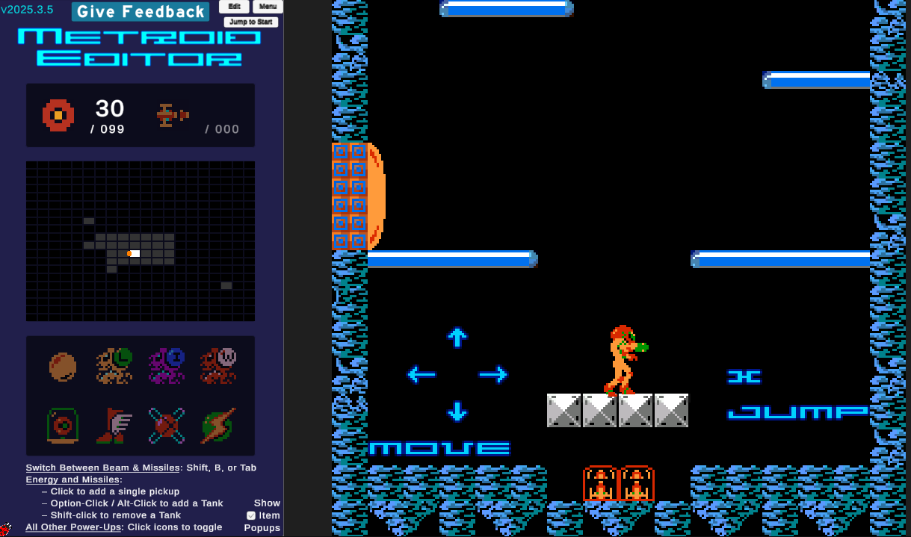
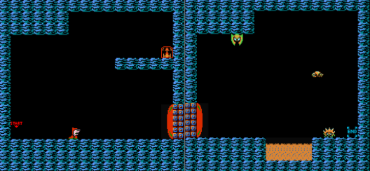
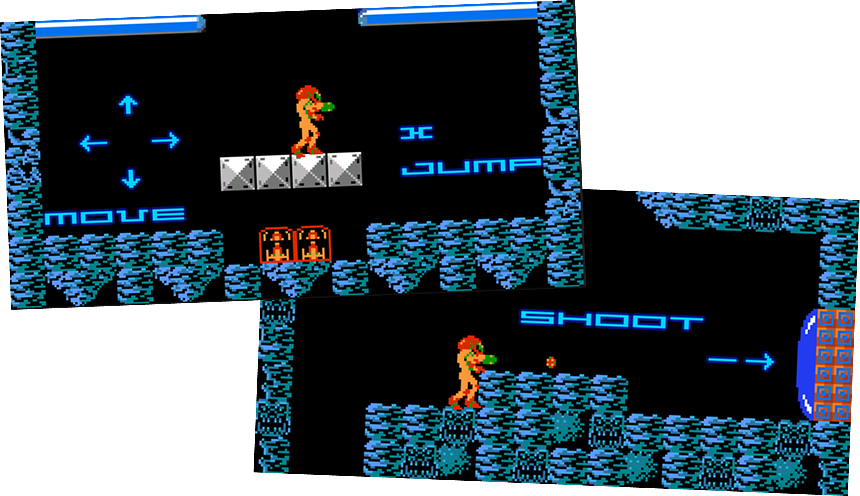
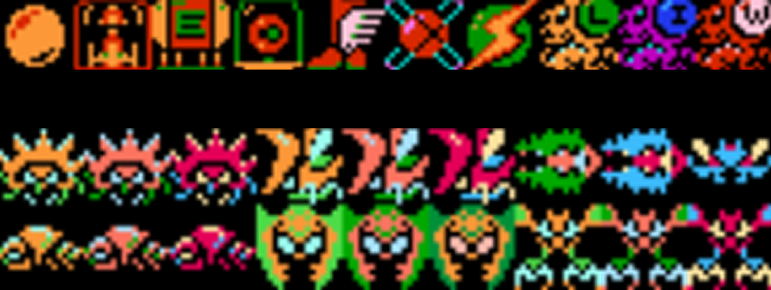
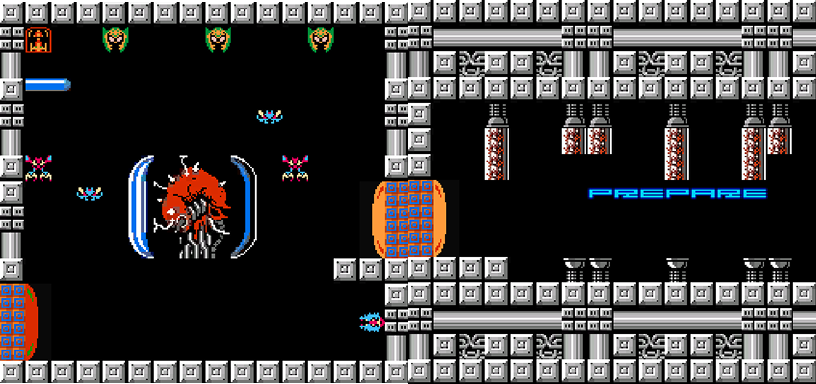
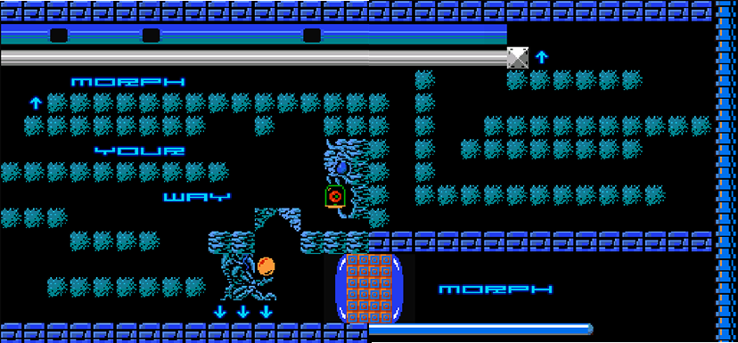
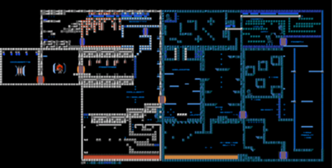

Metroid-Inspired Level Design


The Metroid Inspired Level is a Metroidvania-style level built around the key elements that define the genre. Players explore a nonlinear world, uncovering gated areas locked until the right key or powerup is obtained. RPG-like progression rewards exploration, while design encouragements and built-in level clues guide players forward without holding their hand. Every corner of the level is designed to make players feel the satisfaction of earning their way through the world.
• Solo Project
• Role: Level Designer
• Built in Unity Web Player - Metroid Level Editor
• 3 Week Development

Having never played the original Metroid before, the first step was to playtest and get familiar with the core movement, mechanics, powerups, and enemy behavior. To do this, a small prototype level was built as a way to explore and understand how the game worked firsthand. This hands-on approach helped brainstorm ideas and build a clearer picture of how the level could be structured and progressed before moving into full production.


The opening section focuses on easing players into the core controls and basic mechanics. Players are introduced to jumping, shooting, and opening doors at a comfortable pace, with no real pressure or challenge yet. A teaser of items is also placed early to hint that there is more to discover, sparking curiosity and encouraging exploration from the very start.

Level 2 is where the level begins to take shape with the introduction of items and enemies. A variety of items were planned and incorporated, each serving a specific purpose in gating progression and rewarding exploration. Enemies were also introduced to add challenge and variety throughout the level, giving players new obstacles to interact with as they explored further.

The final section takes place in a lab themed area, bringing together everything players have learned throughout the level. Challenge rooms are included to test players and reward them with missiles and the wave beam powerup. With no traditional boss available, a boss-like encounter was created by filling the final room with familiar enemies from earlier in the level, now with higher health.
During playtesting, a soft lock was discovered in a section where a required item was missing, leaving players unable to progress. The item was added to resolve the issue, ensuring players could always move forward without getting stuck. A very simple, yet important feedback.

The final level captures what makes a Metroid-inspired experience — progression built around gaining new abilities to unlock new rooms and areas. World exploration is encouraged through teasers using hidden items and environmental clues that hint at where to go next. Specific items are required to access certain areas, creating a satisfying sense of earned progression. The teasers and clues work together to keep players curious and moving forward without ever feeling lost.

©2024 by Shion Lovelace.
All content, logos, and trademarks are the property of their respective owners.